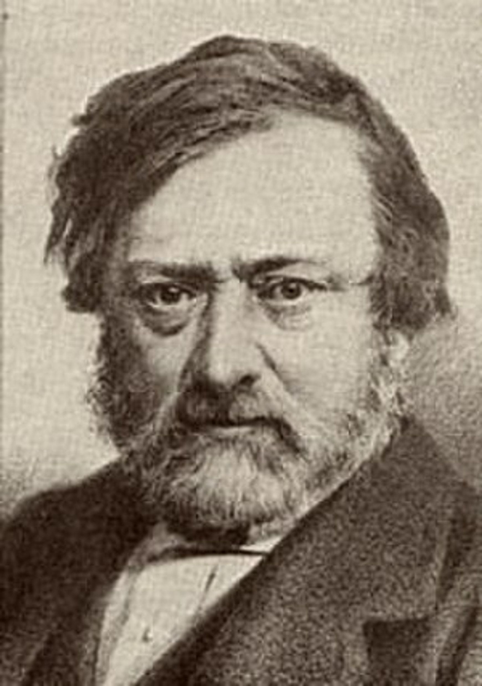
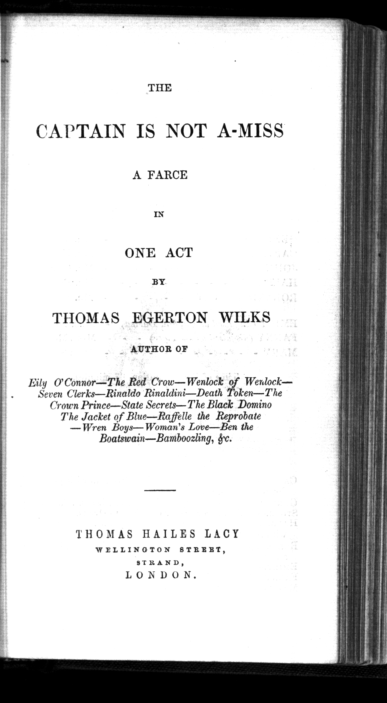
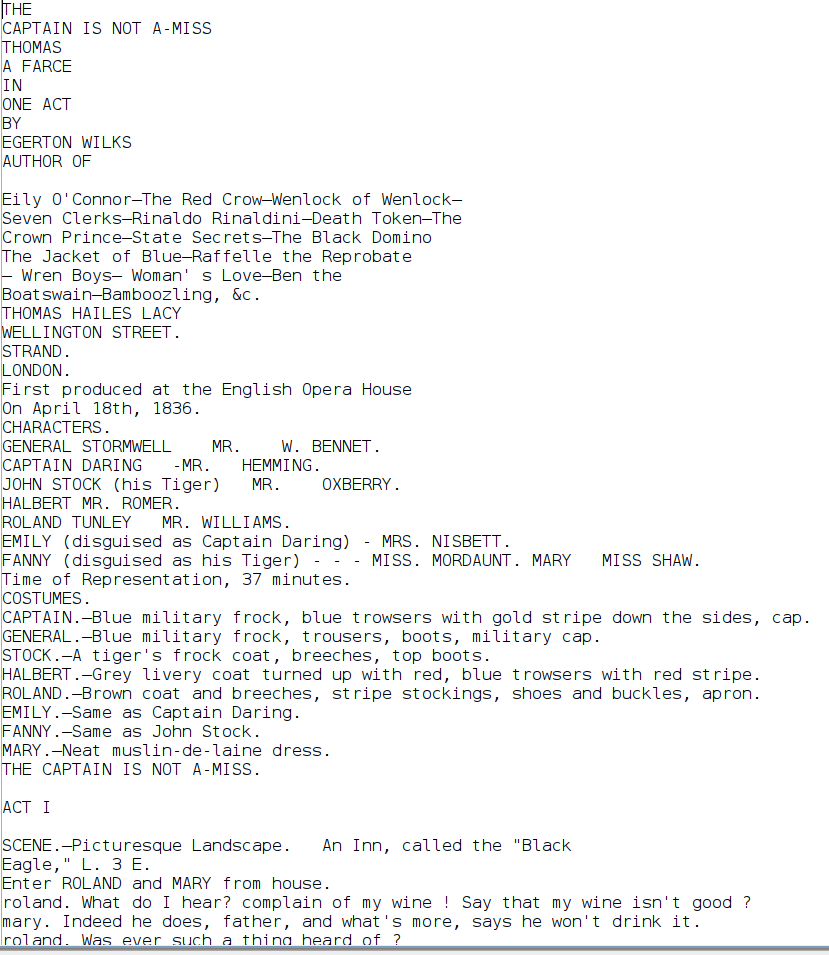
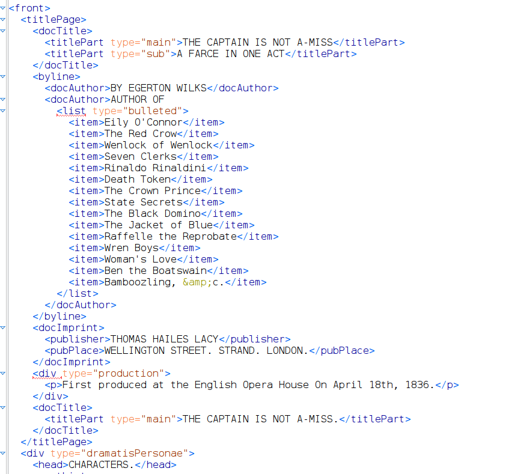
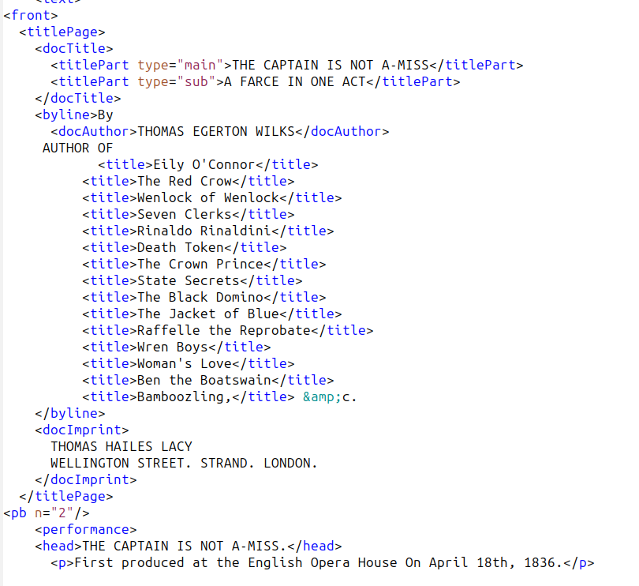

Le projet Digital Lacy vise la numérisation en TEI-XML et mise à disposition d'une grande édition de 1500 pièces dramatiques anglais du 19è siècle.

Pour 80% des titres, l'édition de Thomas Hailes Lacy (1809-1873) fournit l'unique témoin du texte, à part le manuscrit soumis à l'Office du Lord Chamberlain pour licencement du spectacle. Peut-être 2% des titres sont toujours reconnus au theatre de nos jours.
Par exemple...

Le workflow
Notre chaine éditoriale procède en quatre étapes:
1. Etablissement d'un texte brut, représentant tous les mots de la pièce telle qu'elle se présente dans la version imprimée par Lacy.
2. Enrichissement automatisé de ce texte avec des balises XML-TEI, distinguant ainsi la structure du texte, les didascalies, les énoncés, les paragraphes, les vers etc.
3. Validation et correction de cette proto-version TEI; relecture sous controle des pages images originels.
4. Ajout des métadonnées concernant l'édition; normalisation des indications d'énonceure.s
Extraction de texte
Un projet anterieure (Le Victorian Plays Project) a produit des versions PDF avec transcription fidèle respectant plus ou moins la mise en forme de quelques 300 des imprimés. Pour ne pas perdre tout cet effort, nous avons dans un premier temps créé des versions DOCX de ces versions, en utilisant l'OCR de Abbyy (merci Humanum).
Pour la plupart des autres textes, seule la version archivale (par ex chez HathiTrust) est disponible. Mais cette version archival est souvent disponible dans une version texte brut, de fidelité variable.
Enrichissement automatisée
On a experimenté plusieurs méthodes de balisage automatique:
par transformation XSLT du XML contenu par les fichiers format DOCX
en utilisant un LLM/MLL (à savoir, Gemini Pro) pour (a) refaire l'OCRisation des fichiers PDF, et (b) ensuite d'ajouter les balises XML
en utilisant le meme LLM uniquement pour ajouter les balises XML dans une version pure texte
A ma surprise, la troisième methode semble de loin la plus efficace.
Par exemple...
texte brut

structuré par gemini

corrigé

Validation
Par ce mot j'entends ...
Le balisage du document conforme-t-il à un schéma TEI ?
Le contenu textuel est il correct (aucune phrase perdue, malplacée, hallucinée... )?
Le contenu textuel est-il complète et cohérent? pour assurer cela, j'ajoute les balises de saut de page; et les mots en italique (mais pas tous); je normalise les noms des locuteurs en casse mixte, car les petites majuscules utilisées dans la source sont diversement transcrites en majuscules ou dans un mélange aléatoire de casse; je distingue les tirets des tirets cadratins; je corrige la césure de fin de ligne; je réunis des discours fragmentés par un saut de page ou une mise en scène....
... et j'effectue des vérifications plus spécialisées du contenu (la page de titre est-elle complète ? Les informations des représentations sont-elles correctement étiquetées ? Les sexes sont-ils indiqués pour chaque rôle dans la castList ? Les éléments divers comme les listes de costumes, les notes de décor, etc. sont-ils correctement étiquetés ? Et (et c'est la partie essentielle) je lis le texte attentivement.
Est-ce qu'on pourrait enseigner un LLM à effectuer tout cela? Sans doute, mais à mon avis il restera toujours le besoin de lire attentivement le texte.
Enrichissement des metadonnees
Le projet dispose d'un ensemble assez complet de descriptions bibliographiques des titres de l'édition originelle, déjà transformée en TEI. En plus, on génère une liste bien structurée des roles figurant dans chaque pièce, à partir des notices de partition et les labels d'énoncés. Ces informations sont ajoutées dans l'entête TEI.
Etat actuel du projet
Aujourdhui, nous avons effectué à peu près 10% des titres, c'est à dire 155 titres ...